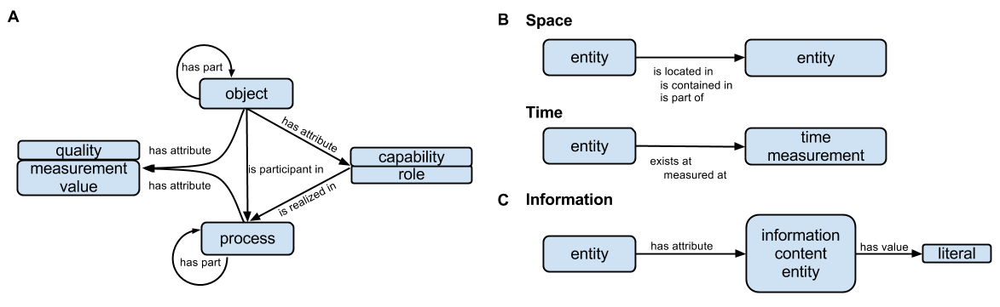
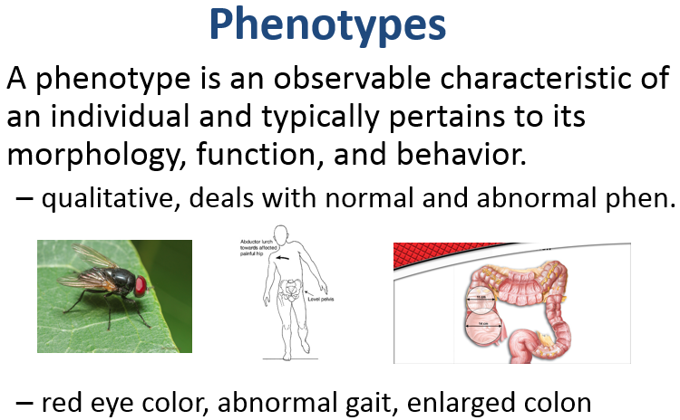
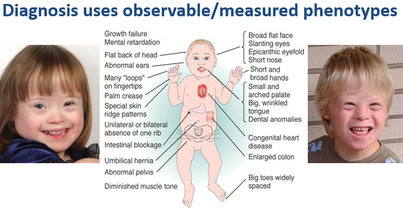
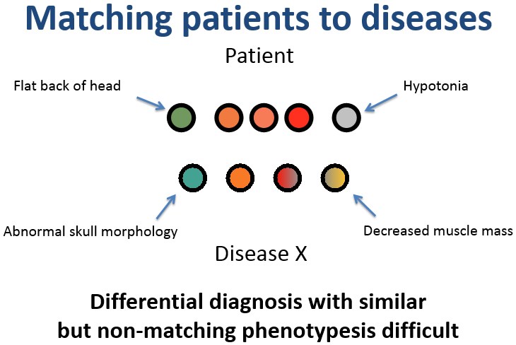
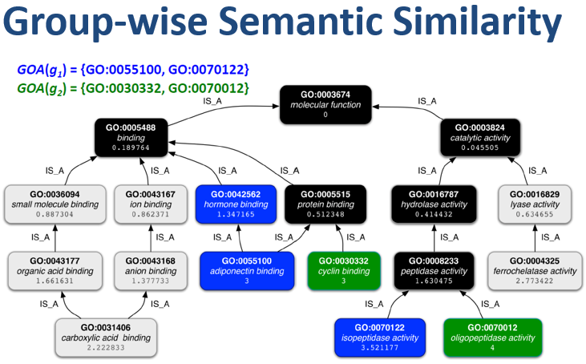
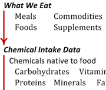
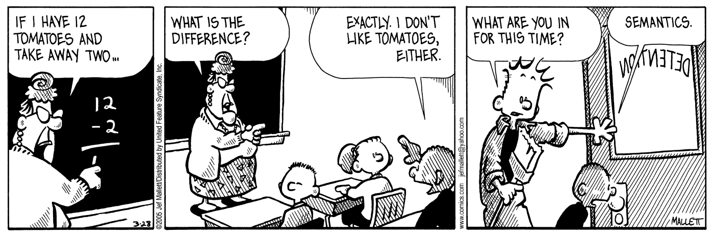

Gig Graham (updated: 20-09-22)
The financial report ontology is intended to guide accountants creating a financial report or financial analysts working with financial reports
WikipediaLet"s take a closer look at the Agenda for this presentation.
The Agenda enables information management features that many of you have never seen "in–the–wild."
Class: HogwartsStudentEquivalentTo: Student and attendsSchoolvalue HogwartsClass: HogwartsStudentSubClassOf: hasPet only (Owl or Cat or Toad)ObjectProperty: hasPetInverses: isPetOfClass: PhoenixSubClassOf: isPetOf only Wizard
Individual: HedwigTypes: OwlIndividual: HarryPotterTypes: HogwartsStudentFacts: hasPet HedwigIndividual: FawkesTypes: PhoenixFacts: isPetOf Dumbledore
Can a Muggle have a Phoenix for a pet?
Wikipedia
Let"s take a closer look at SIO online & at a paper version on display
WikipediaWikipediaThe goal of the National Center for Biomedical Ontology is to support biomedical researchers in their knowledge-intensive work by enabling them to access, review, and integrate ontological resources in biomedical investigation and clinical practice. A major focus is management and analysis of data derived from complex experiments.
|  |  |
|  |  |
WikiPathways home |
Prostaglandin Synthesis and Regulation WikiPathways |
Prostaglandins ChEMATIC |
Calcium ChEFS |
Arachidonic acid ChEFS |
Progesterone ChEFS |
|
Gene Map Annotator & Pathway Profiler Z score Permuation tests PermutedP Up-regulated genes Genes w/ fold changes |
Regulation of gene expression in apples Google Workbook |
 |
| Bio-nutrition tree | In RDFa format | In graph format |
 |
Engineering specification – graph |
Engineering specification – RDFa |
| Soil Ontology – world view | Soil Ontology and soil families |
| Soil Ontology – box view | Soil Ontology – sunburst view |
| Soils in Andrews County, MO | Importance of terroir Wikipedia |
| JPL Semantic Web for Earth and Environmental Terminology |
Soils and Life Cycle AssessmentGoogle Workbook |
Applications: (1) manage weed & insect relationships with soils;
(2) manage soil chemistry relationships with plant & animal habitats.
home
home
home
home
home
homehomeWikipedia
Wikipedia
Wikipedia
home
Questions?
